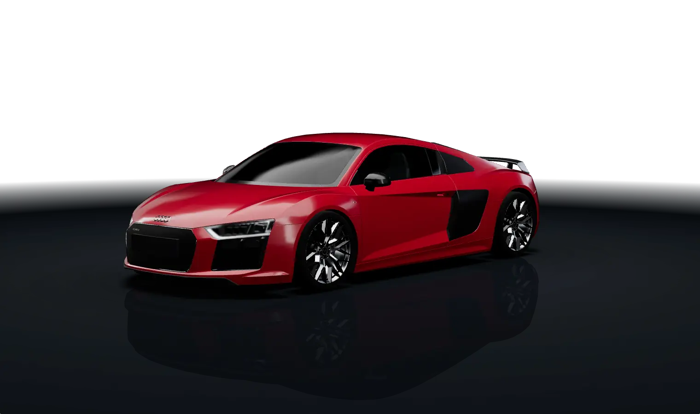

REK PPF COLOR STUDIO · R8 MODEL TEST
صفحة اختبار مؤقتة: تدوير 360°، تقريب، جودة المواد، وتغيير لون الطلاء فقط.

اسحب للتدوير · عجلة الفأرة للتقريباسحب للتدوير · قرّب بإصبعين
ألوان الاختبار
نوع الفلم · Finish